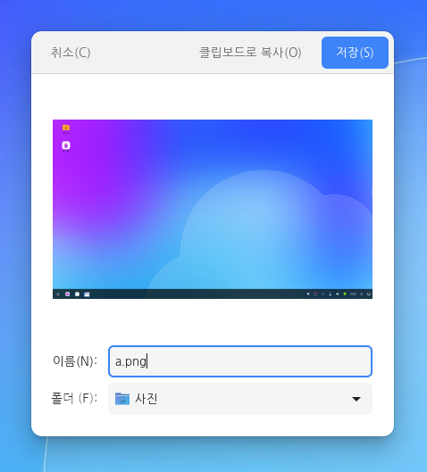

스크린샷 사용 방법에 따라 순차적으로 설명합니다.
스크린샷 열기
다음 중 하나를 사용하여 스크린샷을 실행할 수 있습니다.
1.런처버튼을 선택한 다음 작업 표시줄의 검색 상자에 '스크린샷'을 입력하고 결과 목록에서 스크린샷을 선택합니다. 2.런처
스크린샷 캡처
다음 3가지 방식으로 스크린샷을 찍을 수 있습니다.
1.전체 화면 찍기
2. 현재 창 찍기
3. 잡을 영역 선택
원하는 모드와 효과를 선택한 다음 우측 상단의 [스크린샷 찍기]를 클릭합니다.
스크린샷 저장
스크린샷을 찍으면 파일로 저장하는 창이 나타납니다.

저장할 이름 및 폴더를 지정하고 우측 상단의 [저장]을 클릭하여 사진을 저장합니다.
좌측 상단의 [클립보드로 복사]를 클릭하면 다른 프로그램에 붙여넣을 수 있습니다.